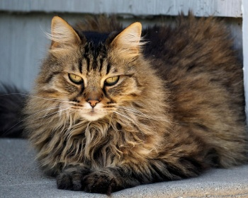

|  | Эти кошки - прекрасный выбор для каждого, кто ищет ласкового и доброго компаньона. Несмотря на то, что они сильно привязываются к своим владельцам, эти животные вполне могут оставаться дома наедине, если вы уходите на работу. Они хорошо уживаются с собаками и другими домашними любимцами, исключение могут составлять птицы, и то - не всегда.Американская длинношерстная имеет мускулистое телосложение, клинообразную мордочку правильной формы, уши средних размеров. Хвост чуть длиннее среднего, пушистый, лапы средней длины. Средняя продолжительность жизни около 15 лет и дольше. |